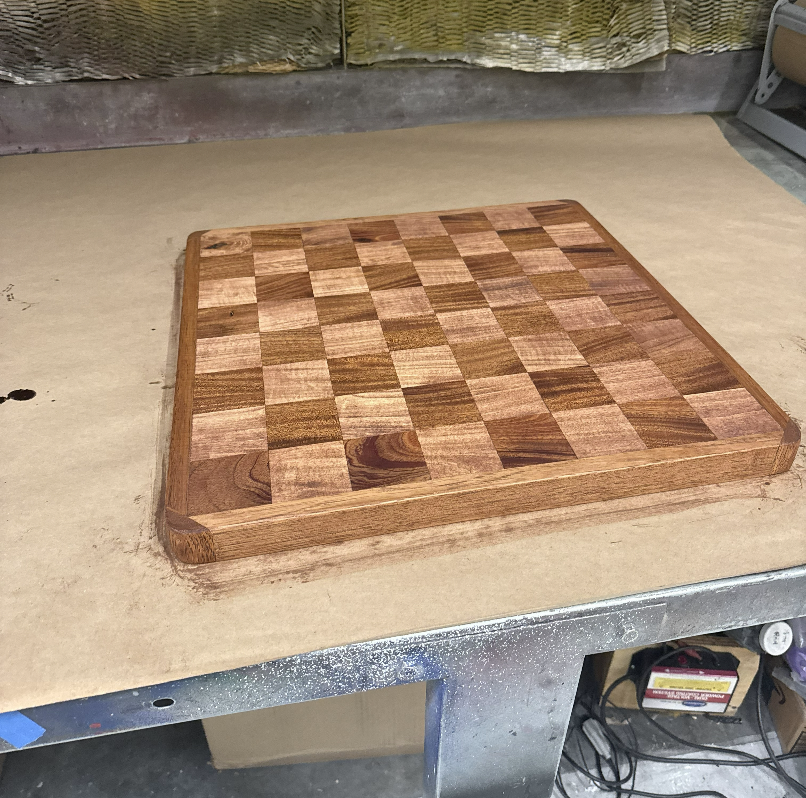
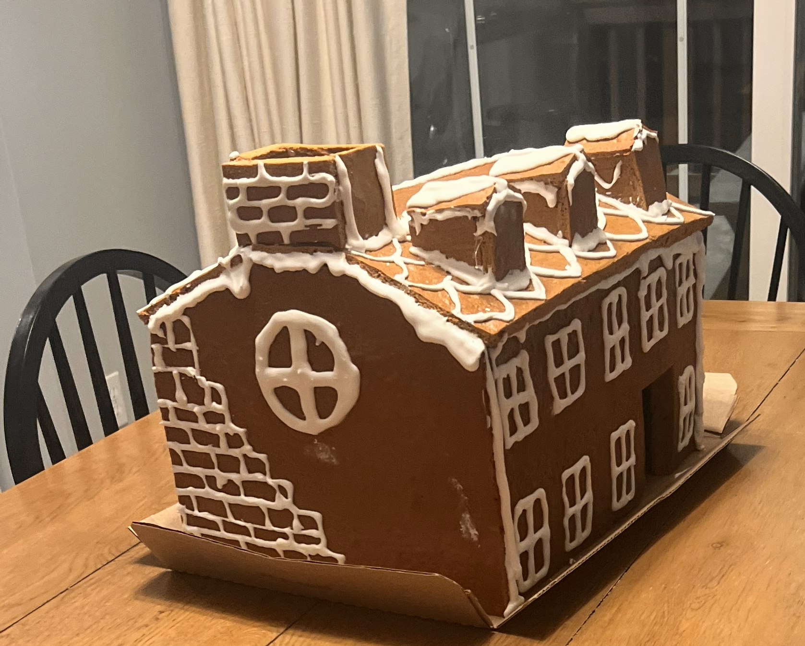
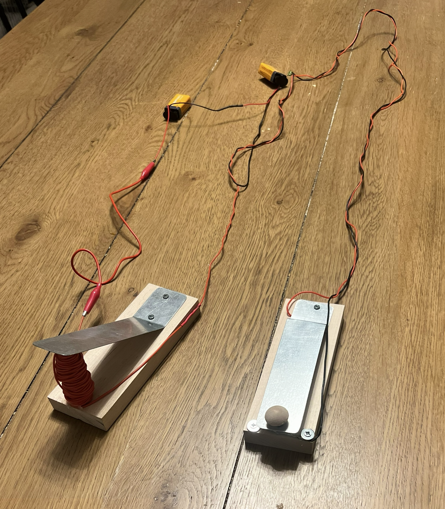
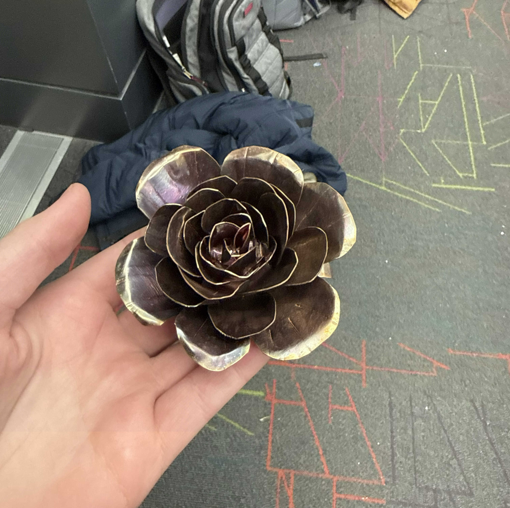
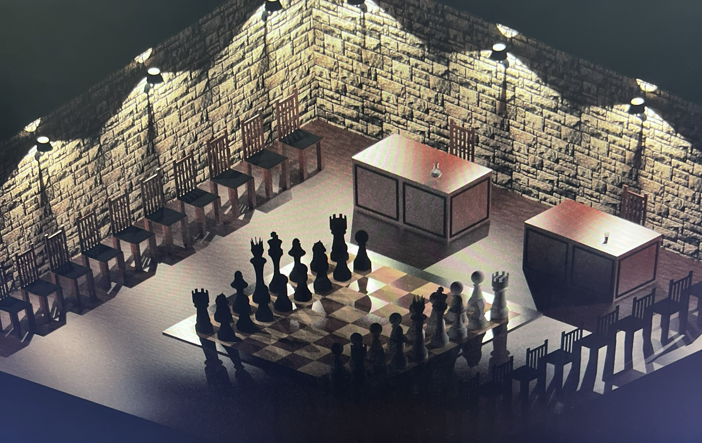
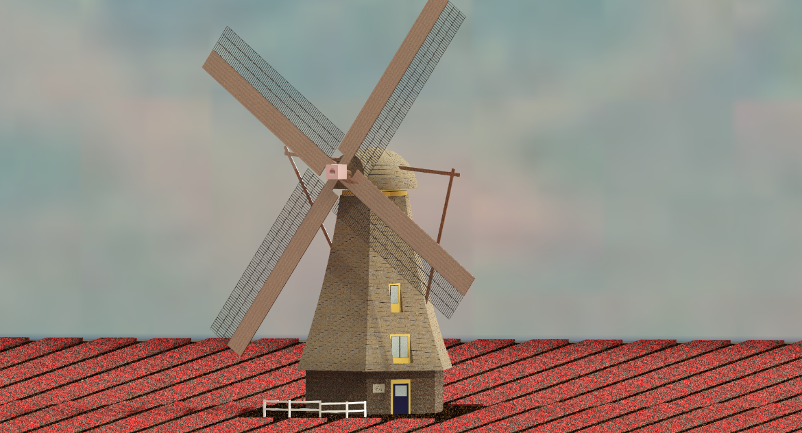

This finished chessboard was a hands-on build that combined woodworking, finishing, and design details into something functional and visually polished.
A few side projects and creative builds outside of the main engineering coursework—small, hands-on, and meant to keep learning fun.

This finished chessboard was a hands-on build that combined woodworking, finishing, and design details into something functional and visually polished.

A creative seasonal project that blended craftsmanship with a bit of playful design, making it a good example of how hands-on work can be both artistic and practical.

This telegraph-inspired project was a fun way to explore communication systems and mechanical motion in a compact, hands-on build.

This metal rose was a small fabrication project focused on detail, patience, and form, and it served as a good reminder that careful craftsmanship can be just as important as technical precision.

This was one of my first real explorations in CAD, done during high school as a way to learn how to build shapes in 3D and start understanding form, proportion, and design decisions.

One of my more artistic CAD studies, this tulip model let me focus on organic shapes and clean design decisions instead of a purely functional engineering problem.
This short motion project highlights a playful engineering build that focused on motion, structure, and seeing an idea come to life in a dynamic way.
More small creative experiments and hobby work will be added here over time.